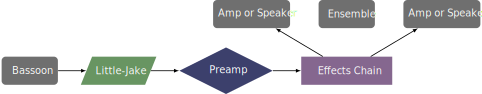

This piece was written in 2018 for Gabriel Beavers, and it is a five-movement work for amplified bassoon and percussion ensemble. Gabriel Beavers recorded the piece on his album Swagger. The composer can be contacted at his website. The score has not been obtained for in-depth analysis.
Presumably, Gabriel Beavers used the same setup for this piece as he did for other pieces on the Swagger album. This involved using an iPad to model effects pedals. Without the score, more commentary about the specific effects is not possible.
A possible setup might be one shown below. 
©2024 by Benjamin Bradshaw
Logo ©2024 by Hannah Bradshaw